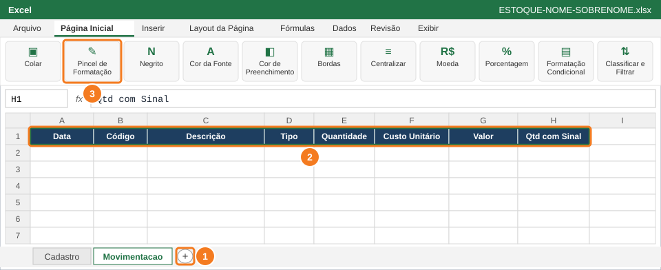
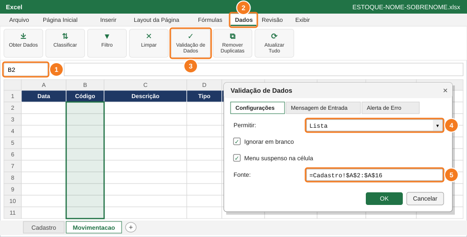
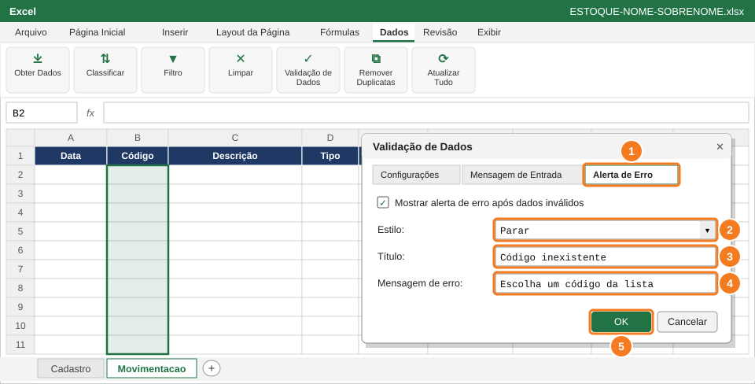
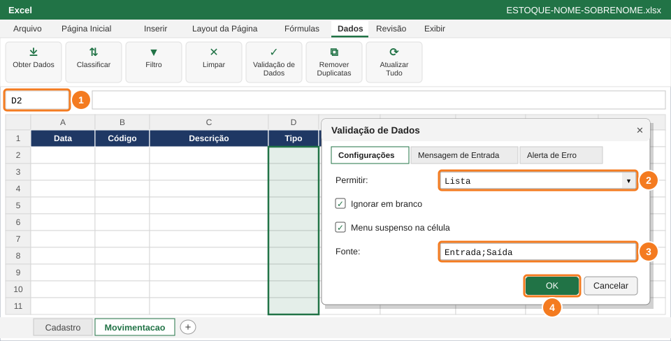
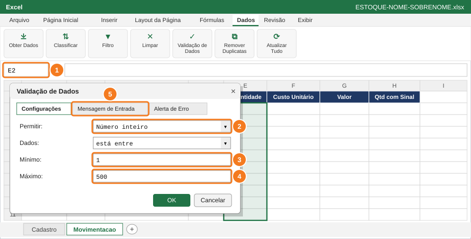
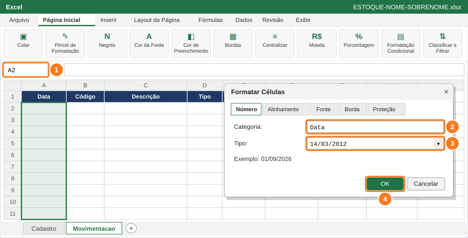
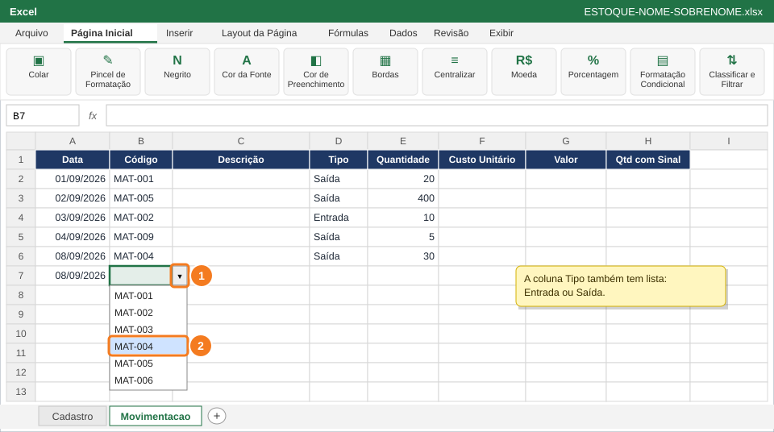
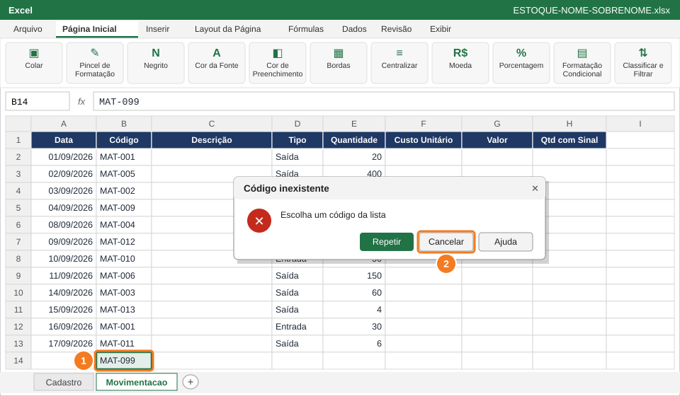

Criar a aba Movimentacao, onde ficam as entradas e saídas de material, e impedir erros de digitação com validação de dados: listas suspensas e limites de quantidade.
Você vai usar
Validação de Dados: Lista e Número inteiro
Mensagem de Entrada e Alerta de Erro (estilo Parar)
Caixa de Nome para selecionar intervalos
Formatar Células: Data
Aba de trabalho:Movimentacao (nova) · Slides de apoio: Arquivo 4 — slides 22–27 e 24.1
1
Crie a aba Movimentacao e os títulos

Botão + (1) cria a aba. Digite os títulos em A1:H1 (2) e copie o visual com o Pincel (3).
Copia só os dados da tabela (sem fórmulas nem formatação).
Clique no + ao lado da aba Cadastro (1) e renomeie a nova aba para Movimentacao (sem ç e sem til).
Em A1:H1 digite (2): Data, Código, Descrição, Tipo, Quantidade, Custo Unitário, Valor, Qtd com Sinal.
Copie o visual do cabeçalho: na aba Cadastro, clique em A1, clique no Pincel de Formatação (3), volte à Movimentacao e arraste sobre A1:H1.
Ajuste a largura das colunas com duplo clique nas divisas.
⚠️ AtençãoO nome da aba é Movimentacao, sem ç e sem til. As fórmulas das próximas questões usam exatamente esse nome.
2
Crie a lista suspensa de códigos

Caixa de Nome (1), guia Dados (2), Validação de Dados (3), Permitir: Lista (4) e Fonte (5).
Copia só os dados da tabela (sem fórmulas nem formatação).
Clique na Caixa de Nome (à esquerda da barra de fórmulas), digite B2:B100 e tecle Enter (1). O intervalo inteiro fica selecionado.
Guia Dados (2) → Validação de Dados (3).
Em Permitir, escolha Lista (4).
Em Fonte, digite a referência abaixo (5). Ainda não clique em OK: o próximo passo continua nesta janela.
=Cadastro!$A$2:$A$16
💡 DicaA fonte é a lista de códigos da aba Cadastro. Os $ travam o intervalo.
🐧 No LibreOffice CalcDados → Validade → Permitir: Intervalo de células → Origem: $Cadastro.$A$2:$A$16.
3
Configure o alerta de erro

Aba Alerta de Erro (1), estilo Parar (2), título (3), mensagem (4) e OK (5).
Copia só os dados da tabela (sem fórmulas nem formatação).
Ainda na janela, clique na aba Alerta de Erro (1).
Estilo: Parar (2).
Título: Código inexistente (3).
Mensagem de erro: Escolha um código da lista (4).
Clique em OK (5).
⚠️ AtençãoSó o estilo Parar impede o erro. Os estilos Aviso e Informações deixam o dado errado entrar.
4
Crie a lista Entrada/Saída na coluna Tipo

Caixa de Nome (1), Permitir: Lista (2), Fonte com as duas opções (3) e OK (4).
Copia só os dados da tabela (sem fórmulas nem formatação).
Na Caixa de Nome, digite D2:D100 e tecle Enter (1).
Dados → Validação de Dados → Permitir: Lista (2).
Fonte: Entrada;Saída (3), com ponto e vírgula entre as opções.
Na aba Alerta de Erro, deixe o estilo Parar e clique em OK (4).
💡 DicaO ponto e vírgula separa as opções da lista. Escreva Saída com acento.
🐧 No LibreOffice CalcValidade → Permitir: Lista → digite uma opção por linha (Entrada, depois Saída).
5
Limite a quantidade de 1 a 500

Caixa de Nome (1), Número inteiro (2), mínimo (3), máximo (4) e aba Mensagem de Entrada (5).
Copia só os dados da tabela (sem fórmulas nem formatação).
Na Caixa de Nome, digite E2:E100 e tecle Enter (1).
Dados → Validação de Dados → Permitir: Número inteiro (2) → Dados: está entre.
Mínimo 1 (3) e Máximo 500 (4).
Aba Mensagem de Entrada (5): Título Quantidade, Mensagem Digite de 1 a 500.
Aba Alerta de Erro: estilo Parar, título Quantidade inválida. Clique em OK.
💡 DicaA Mensagem de Entrada aparece como um balão amarelo quando alguém clica na célula: ela orienta quem vai lançar os dados.
6
Formate a coluna Data

Caixa de Nome (1), categoria Data (2), tipo dia/mês/ano (3) e OK (4).
Copia só os dados da tabela (sem fórmulas nem formatação).
Na Caixa de Nome, digite A2:A100 e tecle Enter (1).
Ctrl+1 → aba Número → categoria Data (2).
Tipo: 14/03/2012, que é dia/mês/ano (3) → OK (4).
💡 DicaPara o Excel, data é um número (dias contados desde 1900). Por isso ela fica alinhada à direita, como os números.
7
Lance as 12 movimentações usando as listas

Clique na setinha da célula (1) e escolha o código na lista (2).
Na tabela Dados para digitar logo abaixo, clique em Copiar e cole na célula A1 da aba Movimentacao: os 12 lançamentos entram nas linhas 2 a 13, cada dado na sua coluna (as colunas C, F, G e H ficam em branco).
Data: digite no formato 01/09/2026.
Código: clique na célula, clique na setinha (1) e escolha o código (2).
Tipo: use a setinha e escolha Entrada ou Saída. Quantidade: digite o número.
Deixe as colunas C, F, G e H vazias: elas serão preenchidas por fórmulas nas próximas questões.
Aba Movimentacao (Questão 2): lance nas linhas 2 a 13
Colunas da planilha: A, B, D, E. Ao copiar, cole na célula A1: colunas de fórmula ficam em branco.
Data
Código
Tipo
Quantidade
01/09/2026
MAT-001
Saída
20
02/09/2026
MAT-005
Saída
400
03/09/2026
MAT-002
Entrada
10
04/09/2026
MAT-009
Saída
5
08/09/2026
MAT-004
Saída
30
09/09/2026
MAT-012
Saída
10
10/09/2026
MAT-010
Entrada
50
11/09/2026
MAT-006
Saída
150
14/09/2026
MAT-003
Saída
60
15/09/2026
MAT-013
Saída
4
16/09/2026
MAT-001
Entrada
30
17/09/2026
MAT-011
Saída
6
✅ VerifiqueVocê lançou 12 linhas (da 2 até a 13) e nenhuma mensagem de erro apareceu.
8
Teste se a validação bloqueia erros

Digite um código que não existe em B14 (1): o Excel bloqueia. Clique em Cancelar (2).
Copia só os dados da tabela (sem fórmulas nem formatação).
Em B14, digite MAT-099 e tecle Enter (1): a janela Código inexistente deve aparecer.
Clique em Cancelar (2).
Em E14, digite 600 e tecle Enter: deve aparecer o alerta de quantidade. Clique em Cancelar.
Confirme que B14 e E14 ficaram vazias (selecione e aperte Delete se precisar).
Salve: Ctrl+B.
✅ VerifiqueAs duas tentativas foram bloqueadas. Se o Excel aceitou MAT-099 ou 600, volte aos passos 3 e 5 e confira o estilo Parar.
📋 Como esta questão será avaliada
Critério
Pontos
Lista de códigos ligada ao Cadastro, com alerta Parar
0,3
Lista Entrada/Saída na coluna Tipo
0,2
Quantidade limitada a números inteiros de 1 a 500, com mensagem de entrada
0,3
12 movimentações lançadas corretamente, com datas formatadas